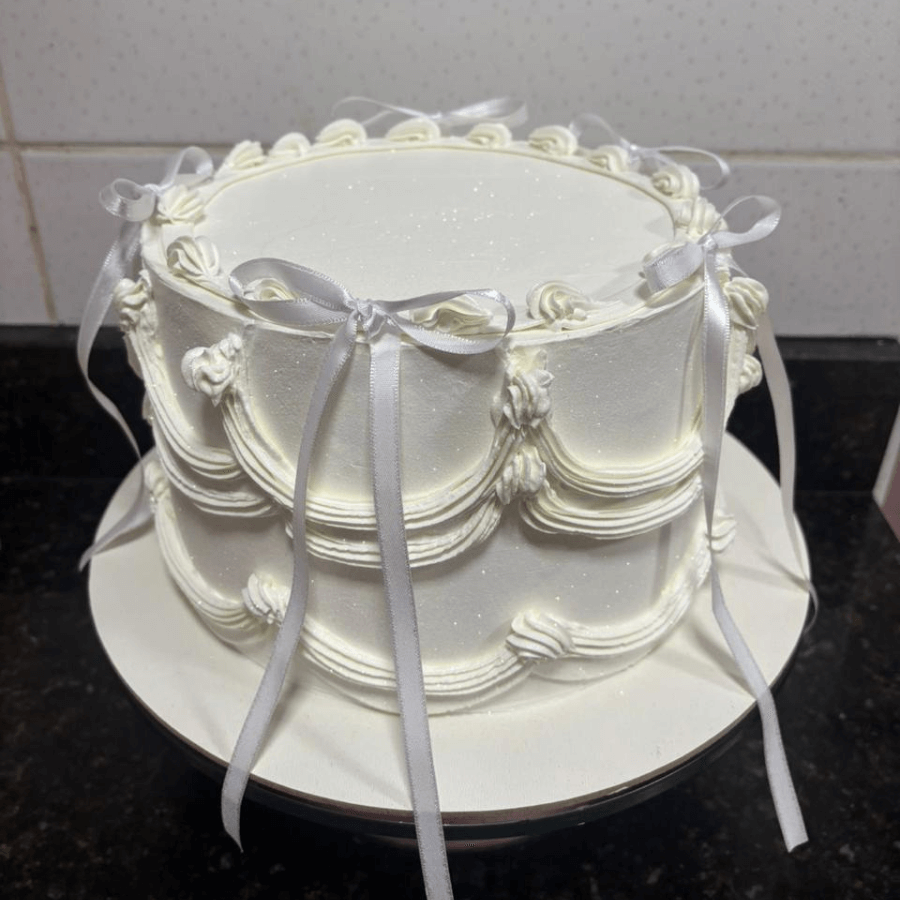
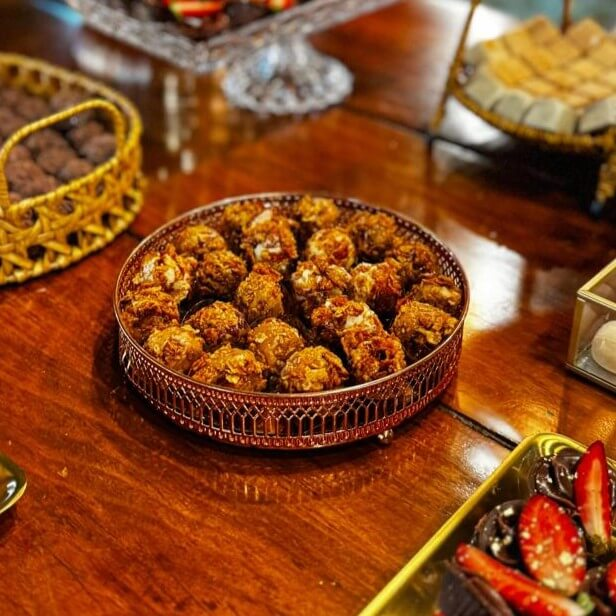
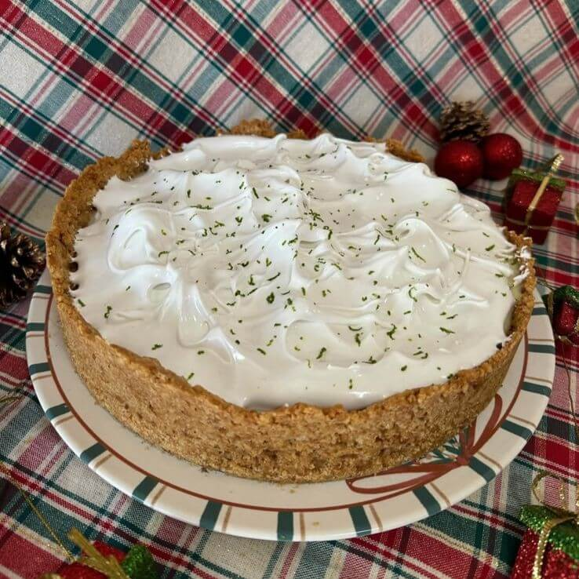

Sobre nós
Mais do que doces, criamos memórias. Com a paixão pela arte da confeitaria e a tradição de usar ingredientes de alta qualidade, fazemos doces artesanais desde 2014. Cada bolo, cada brigadeiro e cada sobremesa é preparado com o carinho e a atenção que a sua celebração merece.
Nossos Destaques


